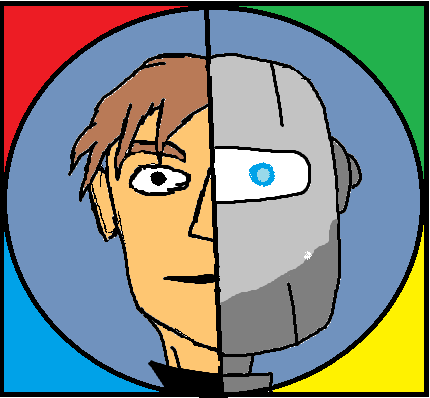

Tagok:Fehér Szabolcs, Kiss Zsolt
Kérdések és válaszok:
1)Szerinted milyen hatással lehet a mesterséges intelligencia a munkaerőpiacra?
Szerintem nagy hatással lehet rá, már most is vannak munkák, amiket a mesterséges intelligenciával végeztetnek
2)Milyen alkalmazási területekről tudsz, ahol mesterséges intelligenciát használnak?
Éttermekben, okosotthonokban, online vásárlásnál, okosautókban, játékokban
3)Hol hallottál először a mesterséges intelligenciáról?
Én először az interneten találkoztam vele pár évvel ezelőtt
4)Szerinted milyen hátrányai lehetnek a mesterséges intelligenciának a jövőre nézve?
Elveheti az emberek munkáját és van olyan dolog, amire csak az ember képes
5)Mit tudsz a mesterséges intelligenciával kapcsolatban?
Egyre nagyobb szerepet játszik az informatika világában és részben emiatt érdekel
